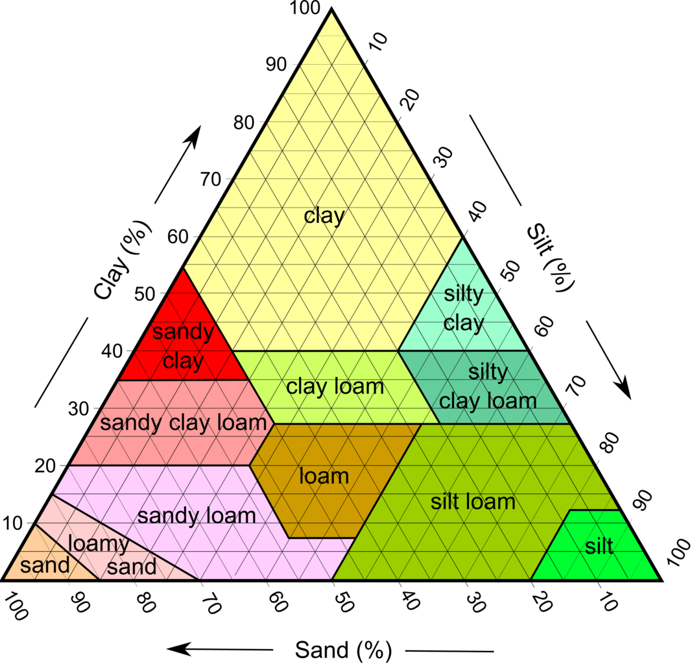

Research Gallery¶
Notebooks Examples¶

White Clay Creek - Stage, Streamflow / Discharg…
Continuous streamflow data collected by the Stroud Water Research Center within the 3rd-order research watershed, White Clay Creek above McCue Road…
Open Example
LCZO-Stream Water Chemistry, Streamflow / Disch…
Concentration-discharge relationships are a key tool for understanding the sourcing and transport of material from watersheds to fluvial networks. …
Open Example